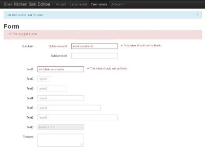
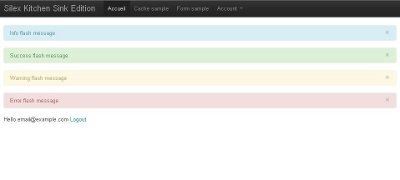

This project is a sample or a bootstrap silex application. You can use it for your next php application.
assetic:dump command)doctrine:database:create, doctrine:database:drop,
doctrine:schema:load, doctrine:schema:show commands)
Run the following commands:
php composer.phar create-project -s dev lyrixx/Silex-Kitchen-Edition PATH/TO/YOUR/APP
cd PATH/TO/YOUR/APP
Run the following commands:
git clone https://github.com/lyrixx/Silex-Kitchen-Edition.git PATH/TO/YOUR/APP
cd PATH/TO/YOUR/APP
curl -s http://getcomposer.org/installer | php
php composer.phar install
You can edit resources/config/prod.php and start hacking in src/controllers.php
Assets are generated for each request in debug mode.
Letting Assetic generate assets dynamically
in a production environment is not optimized.
Instead, each time you deploy your app in the production
environment, you should dump assets using php console assetic:dump.

composer install --dev
phpunit
If your web server do not run with the same user as your CLI,
you may run : chmod 777 -R resources/cache/ web/assets/.